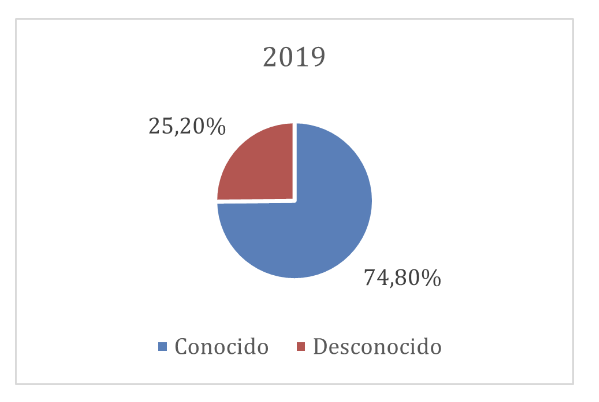

Sociología del Género
Clase 11: Violencia de género
SOL191 · Instituto de Sociología · PUC
Violencia de género
SOL191 · Clase 11: Violencia de género
Advertencia de contenido
Hoy hablaremos de violencia física, sexual, psicológica y digital, acoso, femicidio y abuso sexual. Puede ser difícil o doloroso.
- Puedes salir de la sala, tomar agua o una pausa cuando lo necesites, sin pedir permiso ni dar explicaciones.
- Puedes participar de forma más pasiva y no es necesario compartir experiencias personales.
- Puedes volver cuando quieras.
- Si quieres conversar después, escríbeme a mí o a las ayudantes.
Fono 1455 (SernamEG): orientación gratuita y confidencial en violencia de género.
Objetivos de hoy
- Dimensionar la violencia de género en Chile con datos actuales y entender qué miden (y qué no) esas cifras.
- Comparar dos teorías de la violencia: la misoginia como control social (Manne) y la violencia como mensaje entre hombres (Segato).
- Analizar un caso reciente a partir de una columna de Manne: cómo los grupos de pares habilitan y encubren la violencia.
- Discutir los alcances y límites de la respuesta institucional chilena (Ley 21.675, violencia digital).
¿Qué tan extendida es? Encuesta Nacional de Violencia contra las Mujeres 2024
1 de cada 3 mujeres (33,4%) ha sufrido violencia psicológica, física o sexual en su vida; 1 de cada 5 (20,3%) en el último año.
- Psicológica: 28,6% vida · 18,5% año
- Física: 10,9% vida · 3,5% año
- Sexual: 8,7% vida · 3,2% año
- Agresor principal más frecuente: ex pareja (33% en violencia psicológica, 35% en física)
41,4% ha sufrido violencia en espacios públicos alguna vez (31,3% insultos sexuales; 22,5% tocaciones sin consentimiento).
- Solo 12,1% denunció el último episodio de violencia sexual (16,3% en 2020).
Fuente: Subsecretaría de Prevención del Delito, ENVCM 2024. Mujeres de 15 a 65 años, zonas urbanas, muestra probabilística (n = 7.100).
Femicidios en Chile
En 2024: 43 femicidios consumados, 319 frustrados y 80 tentados (SernamEG).
- Los consumados se mantienen estables (43-44 por año desde 2020).
- Los frustrados se han duplicado: 151 en 2020 → 319 en 2024.
¿Qué indica que los consumados se mantengan y los frustrados aumenten? ¿Más violencia, más registro o más intervención a tiempo?
Abuso sexual en la niñez: Primera Encuesta Nacional (CUIDA UC)
18% de la población adulta sufrió abuso sexual antes de los 18 años: 28% de las mujeres y 8% de los hombres. Un 5% sufrió violación.
- Más de la mitad (55%) ocurrió entre los 6 y 12 años.
- 94% de los ofensores son hombres (98% en el caso de las niñas; 76% en el de los niños).
- 77% de los ofensores eran conocidos: familiares (41%, sobre todo tíos, primos y padrastros) o conocidos de la familia (36%).
38% nunca se lo contó a nadie, y casi la mitad (48%) de quienes lo contaron tardaron 10 años o más.
- Solo 9% denunció y 17% recibió atención especializada o tratamiento de salud mental.
¿Qué mecanismos de Armstrong et al. (silencio, poder de definir) y de Segato (en el hogar “porque puede”) ayudan a entender estos datos?
Fuente: CUIDA, Centro de Investigación del Abuso y la Adversidad Temprana (UC y Fundación Para la Confianza). Encuesta probabilística a 2.101 personas de 18 a 65 años en 13 regiones, diciembre 2021 a enero 2022.
Cifras PUC: violencia sexual (2019)



¿Cómo explicamos la violencia?
La violencia sexual como mecanismo de desigualdad (Armstrong et al. 2018)
La violencia sexual es causa y consecuencia de múltiples desigualdades, y es más eficaz porque se silencia.
- Poder: dominación, no desviación individual.
- Interseccionalidad: mirar solo el género (o solo la raza) deja fuera a muchas víctimas.
- Organizaciones: universidades, iglesias o ejércitos la facilitan y encubren.
- Cultura: guiones sexuales y mitos de violación que culpan a la víctima.
- Masculinidades: sostiene la masculinidad y las jerarquías entre hombres.
- Poder de definir: quién decide qué cuenta como violencia.
El mito de la “violación real” (Armstrong et al. 2018)
El arquetipo: un desconocido ataca con violencia a una mujer “respetable”, que resiste y denuncia.
La evidencia:
- La mayoría conoce a su agresor.
- La mayoría no denuncia; muchas no lo nombran como violación.
- Denuncias falsas: 2–10%, como en otros delitos.
Instituciones:
- “Segundas agresiones” en policía, tribunales y salud.
- Límites del feminismo carcelario.
- Silencio sociológico sobre el tema.
¿Se parece este arquetipo a los datos de Chile que vimos?
Misoginia según Manne
(Manne 2018, Down Girl)
La misoginia no es solo odio individual: es un sistema de control social que fiscaliza la subordinación de las mujeres.
- Sexismo: la ideología que justifica el orden de género.
- Misoginia: “la policía” que castiga a quienes lo desafían.
¿Ejemplos de mujeres que desafían las normas y son fiscalizadas? ¿Y de hombres?
Himpathy e injusticia epistémica
“Himpathy” (Manne): simpatía excesiva hacia los hombres que ejercen violencia, que protege su futuro y culpa a la víctima.
Caso Pradenas (condenado en 2023): el debate se centró en su familia, su estatus y su futuro.
Injusticia epistémica (Fricker): se resta credibilidad a las mujeres como testigos de su propia experiencia.
Caso Nabila Rifo: en 2017 la Corte Suprema descartó el femicidio frustrado porque “no quedó demostrado cabalmente el dolo de matar”.
Segato: la violencia como mensaje
(Segato 2016, cap. 1, selección de pasajes)
La violación es violencia expresiva más que instrumental: su fin es expresar el control absoluto de una voluntad sobre otra. Por eso es un enunciado, y se dirige a interlocutores.
Eje vertical: el agresor habla a la víctima. Se presenta como “moralizador”: la mujer debe ser contenida, disciplinada.
Eje horizontal (su mayor aporte): habla a sus pares. Pide ingreso a la “hermandad viril” y compite por un lugar en ella.
- La masculinidad es un estatus que se conquista y debe reconfirmarse, mediante un tributo que entregan las mujeres.
- Los violadores, la mayoría de las veces, “no actúan en soledad”.
- En el hogar el hombre abusa porque puede; en el espacio público, para demostrar que puede.
Manne y Segato: ¿en qué se parecen y en qué difieren?
| Manne | Segato | |
|---|---|---|
| ¿Qué es la violencia? | Castigo: control social sobre mujeres que desafían el orden | Mensaje: acto expresivo de dominio |
| ¿A quién se dirige? | A la mujer que transgrede (y a todas, como advertencia) | A la víctima y a los otros hombres |
| ¿Qué la sostiene? | La himpathy y el descrédito de las víctimas | La hermandad masculina y el mandato de demostrar masculinidad |
En parejas (3 min): piensen en un caso de violencia de pareja en el hogar. ¿Qué teoría lo explica mejor? ¿Y un caso de violencia sexual grupal?
Actividad: lectura y discusión de la columna de Manne
Manne, K. (2026, 20 de octubre). “What Makes Men in Groups Behave So Badly?” The New York Times.
Caso: el chat grupal de la fraternidad Chi Phi (Cornell) la noche en que una estudiante (“Jane Doe”) denuncia haber sido agredida sexualmente por siete hombres.
1. Lectura individual (10 min). Mientras leen, marquen:
- un pasaje que ilustre la himpathy,
- un pasaje que ilustre el eje horizontal de Segato (hablarle a los pares),
- un dato o evidencia que use Manne.
Advertencia: la columna cita lenguaje sexual explícito del chat.
Actividad: discusión en grupos (25 min)
En grupos de 4.
A. Mecanismos (8 min). ¿Cómo explica Manne que hombres que “eran algo así como amigos” de Jane Doe la ofrecieran al grupo? Identifiquen en el texto el “bro code”, el silencio de quienes vieron el chat y la himpathy posterior (¿quiénes terminan sintiéndose víctimas?).
B. Teoría (8 min). El chat como “escenario”: ¿qué mensajes se dirigen a la víctima y cuáles a los pares? ¿Qué agrega Segato que Manne no explica, o al revés? Usen el testimonio de Diego Estrada (ex presidente de una fraternidad).
C. Evidencia (9 min). Manne cita un estudio según el cual los hombres que entran a fraternidades tienen 3 veces más probabilidad de cometer violencia sexual en su primer año. ¿Cuánto apoya este dato la frase “las fraternidades pueden convertir hombres en violadores”? ¿Qué otra explicación habría que descartar?
Plenario abierto: ¿cómo abordarlo? (15 min)
Si el problema no es solo el individuo, sino el grupo que habilita y calla y las instituciones que lo permiten:
- ¿Cómo abordarían este problema? ¿Qué debería cambiar y quién es responsable de cambiarlo?
- Manne propone prohibir las fraternidades. ¿Están de acuerdo? ¿Cuál sería el equivalente en Chile?
Violencia digital en Chile (Ananías et al. 2023)
Encuesta online a 531 mujeres (cis, trans y no binaries) en 2020, muestra no probabilística por cuotas (ONG Amaranta). 73,8% había sufrido violencia digital.
- Más reportado: violencia verbal (66,4%), acoso u hostigamiento (59%), envío de fotos o videos de penes sin consentimiento (49,6%).
- Agresores: anónimos o perfiles falsos (41,9%), pareja o ex pareja (18,1%), hombres del entorno (14,8%).
- 46,3% de las encuestadas vivió control o violencia digital de una pareja (revisar el celular, exigir contraseñas o ubicación).
- Solo 12,2% intentó denunciar, la mayoría sin respuesta positiva.
- No hubo más ataques a activistas que a no activistas: el género sería el principal factor de exposición.
- Al publicarse el estudio, Chile no tenía una ley integral sobre violencia digital.
El 73,8% incluye a 58 mujeres que primero dijeron que no habían sufrido violencia, pero luego describieron situaciones de control de su pareja. ¿Qué nos dice esto sobre cómo se mide (y se reconoce) la violencia?
Reflexión final (Wooclap)
5 minutos, anónimo:
- ¿Qué idea de hoy cambia cómo entiendes la violencia de género?
Fono 1455 (SernamEG) · Fono 149 (Carabineros, Fono Familia)
SOL191 Sociología del Género · Clase 11